情况 · 服务端发的字段
改前（标题行 / 底部那句）
改后
变了什么、为什么
挂着、空闲held idle
phase IDLE · released false · ANSWERED · waitingOn null
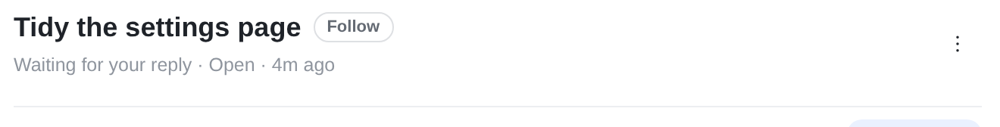
不变。
一个回合失败后释放released by a failed turn
released · lastTurnOutcome FAILED · 无 endReason
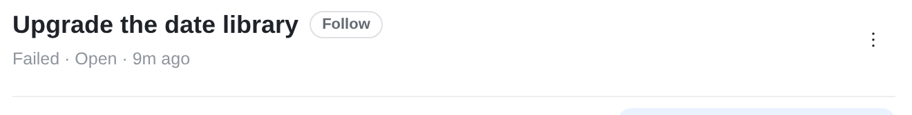

不变。新判法：released + 最后回合 FAILED + 没人要求结束（D9），不再看 status。
被 End 释放released by End
released · endReason ended


不变。
任务那次运行做完了a task run that finished
released · endReason task_done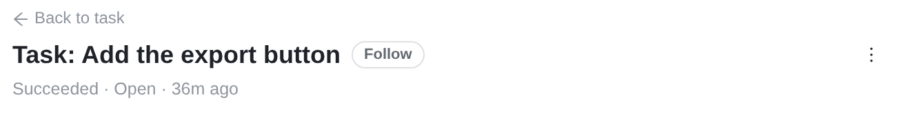
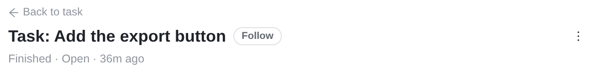
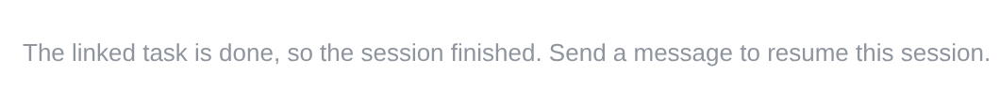
Succeeded → Finished，绿勾不变；底部那句改成
The linked task is done, so the session finished.（D2：会话不说 succeeded；只有任务 DONE 或落地容器结算才说 Finished）。任务详情里这次运行的徽标同样改成 Finished（没截图，同一个词）。没有回合、后台 job 在跑running a job with no turn
phase RUNNING · activity BACKGROUND_JOB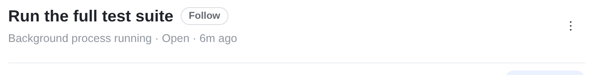

不变（推荐，见问题 ①）。phase RUNNING 只拿来决定轮询，不换图标。
等审批waiting on an approval
phase RUNNING · waitingOn PERSON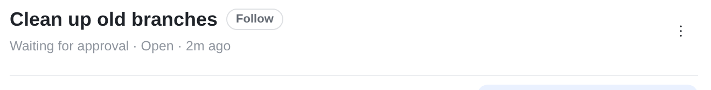

不变。waitingOn PERSON 和 pendingApprovals 读到的是同一件事。
被挡住（暂停派发、账户暂停等）on hold
phase PENDING · waitingOn HOLD · queuedReason null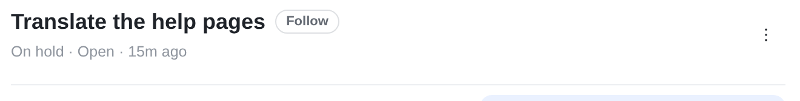
Queued → On hold，图标不变（问题 ②）。只在服务端说 HOLD、又没有更具体的说法时换；Runner offline / 更新中 / 地区 / 磁盘这些原来的词照旧。
会被叫醒will wake
phase IDLE · waitingOn WAKE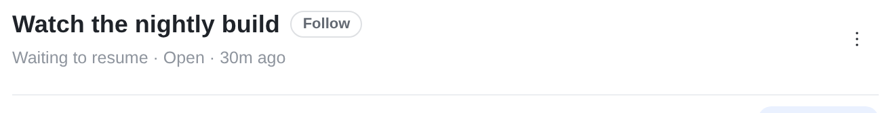

不变。waitingOn WAKE 和 activity WAITING 说的是同一件事。
要求了结束、runner 没回应、被回收ended, runner never confirmed
released · endReason ended · lastTurnOutcome FAILED · status FAILED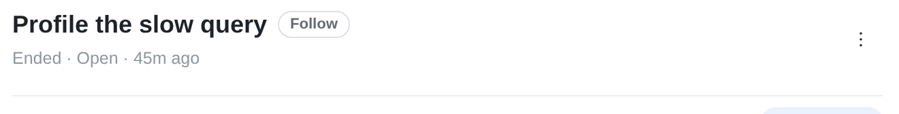

Failed（红叉）→ Ended（灰勾）。有人要求结束，会话就结束了；runner 不回应不是这次对话失败（设计 §12，end_not_honored 不算失败）。
老数据：普通对话存成 SUCCEEDEDold plain row stored SUCCEEDED
released · 无 endReason · 不是落地容器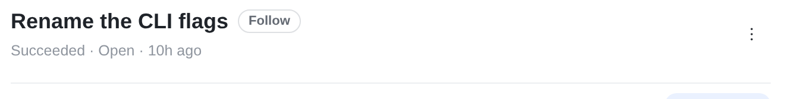

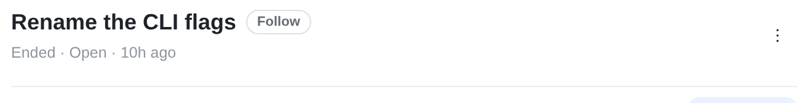
Succeeded（绿勾）→ Ended（灰勾）。D2：普通对话只有 Ended 或 Failed。现在的代码不会再写出这种行，只剩老数据。
打断后正在被 Endbeing ended after an interrupted turn
released false · lastTurnOutcome INTERRUPTED · endReason ended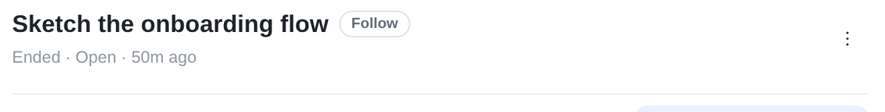
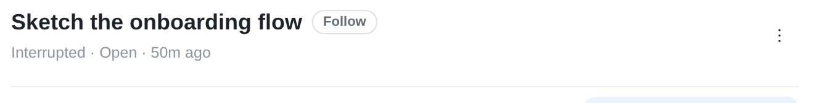
Ended → Interrupted，直到 runner 真的放手（几秒）才变 Ended。旧读法凭 endReason 提前说 Ended，于是“移到别的 Workspace”会在 runner 放手前就去移（已修，见下面“不改像素的行为”）。